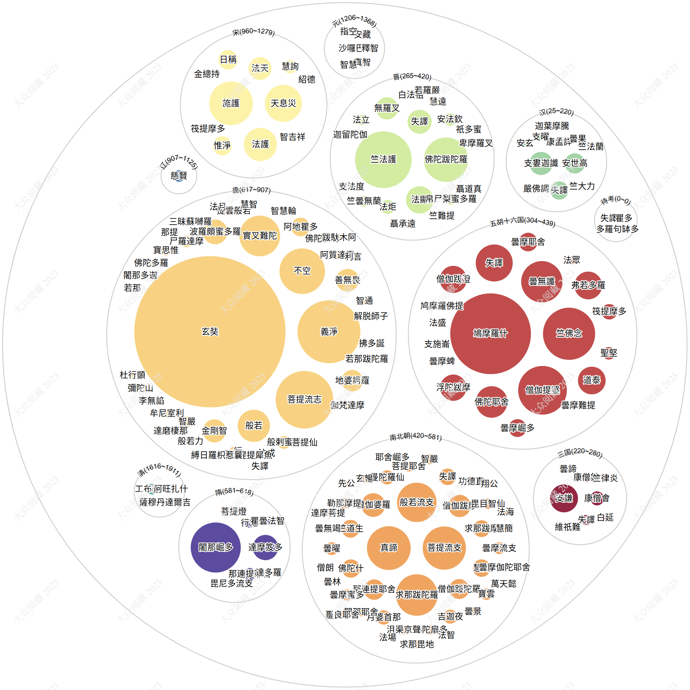

历代译师译经数量统计
2023年05月24日
下图以圆形的大小来表示译经的字数。共收录历代译师173人，可以对历代译经情况做一鸟瞰。例如可以看出有唐一朝翻译事业最为鼎盛，其中玄奘大师译作最丰。

详细数据见下表：
| 时期 | 譯師 | 人名規範庫ID | 譯經字數 | 譯經種數 |
|---|---|---|---|---|
| 漢(25~220) | 支婁迦讖 | A000163 | 22.9万 | 12 |
| 安世高 | A000366 | 17.4万 | 55 | |
| 失譯 | 14.1万 | 18 | ||
| 康孟詳 | A001045 | 3.3万 | 4 | |
| 支曜 | A000165 | 1.4万 | 5 | |
| 曇果 | A001780 | 1.1万 | 1 | |
| 嚴佛調 | A001912 | 0.8万 | 3 | |
| 竺大力 | A000761 | 0.7万 | 1 | |
| 安玄 | A000367 | 0.7万 | 2 | |
| 竺法蘭 | A000748 | 0.1万 | 1 | |
| 迦葉摩騰 | A000883 | 0.1万 | 1 | |
| 三國(220~280) | 支謙 | A000164 | 33.4万 | 53 |
| 康僧會 | A001046 | 8.4万 | 2 | |
| 失譯 | 4.4万 | 4 | ||
| 康僧鎧 | A000899 | 3.4万 | 3 | |
| 曇諦 | A002167 | 2.0万 | 1 | |
| 維祇難 | A001634 | 1.5万 | 1 | |
| 竺律炎 | A000764 | 1.2万 | 3 | |
| 白延 | A000304 | 0.6万 | 1 | |
| 晉(265~420) | 竺法護 | A000749 | 137.2万 | 90 |
| 佛陀跋陀羅 | A000441 | 84.3万 | 9 | |
| 法顯 | A000750 | 32.3万 | 5 | |
| 失譯 | 24.7万 | 63 | ||
| 無羅叉 | A001324 | 21.1万 | 1 | |
| 法炬 | A000707 | 8.4万 | 27 | |
| 安法欽 | A000368 | 6.7万 | 2 | |
| 帛尸梨蜜多羅 | A000619 | 5.1万 | 1 | |
| 竺曇無蘭 | A001788 | 5.0万 | 29 | |
| 法立 | A000693 | 4.6万 | 3 | |
| 白法祖 | A000305 | 3.0万 | 5 | |
| 聶承遠 | A001882 | 2.2万 | 2 | |
| 祇多蜜 | A000999 | 1.9万 | 2 | |
| 聶道真 | A001883 | 1.5万 | 5 | |
| 慧遠 | A001204 | 1.5万 | 1 | |
| 竺難提 | A000766 | 0.5万 | 1 | |
| 支法度 | A000160 | 0.4万 | 2 | |
| 迦留陀伽 | A000881 | 0.2万 | 1 | |
| 若羅嚴 | A000872 | 0.1万 | 1 | |
| 卑摩羅叉 | A000552 | 0.0万 | 1 | |
| 五胡十六國(304~439) | 鳩摩羅什 | A001583 | 277.9万 | 50 |
| 竺佛念 | A000435 | 115.9万 | 12 | |
| 僧伽提婆 | A001589 | 101.1万 | 5 | |
| 曇無讖 | A001789 | 72.7万 | 12 | |
| 失譯 | 58.4万 | 28 | ||
| 佛陀耶舍 | A000439 | 42.4万 | 4 | |
| 弗若多羅 | A000247 | 33.0万 | 1 | |
| 道泰 | A001526 | 32.8万 | 3 | |
| 僧伽跋澄 | A001593 | 31.4万 | 3 | |
| 浮陀跋摩 | A000941 | 29.5万 | 1 | |
| 曇摩耶舍 | A001796 | 14.9万 | 2 | |
| 曇摩崛多 | A001797 | 13.7万 | 1 | |
| 筏提摩多 | A001329 | 10.2万 | 1 | |
| 聖堅 | A000713 | 6.7万 | 10 | |
| 法眾 | A000720 | 2.8万 | 1 | |
| 鸠摩羅佛提 | A001584 | 2.2万 | 1 | |
| 曇摩蜱 | A001793 | 2.1万 | 1 | |
| 曇摩難提 | A001798 | 1.2万 | 2 | |
| 支施崙 | A000161 | 0.8万 | 1 | |
| 法盛 | A000719 | 0.5万 | 1 | |
| 南北朝(420~581) | 真諦 | A000962 | 81.5万 | 32 |
| 菩提流支 | A001357 | 79.7万 | 30 | |
| 求那跋陀羅 | A000527 | 73.7万 | 28 | |
| 般若流支 | A000996 | 66.3万 | 15 | |
| 僧伽婆羅 | A001588 | 24.0万 | 12 | |
| 僧伽跋摩 | A001592 | 21.3万 | 4 | |
| 那連提耶舍 | A000545 | 17.7万 | 6 | |
| 僧伽跋陀羅 | A001591 | 16.9万 | 1 | |
| 佛陀什 | A000436 | 14.3万 | 2 | |
| 竺道生 | A001502 | 13.5万 | 1 | |
| 慧覺 | A001743 | 13.0万 | 1 | |
| 求那跋摩 | A000218 | 12.1万 | 8 | |
| 失譯 | 11.6万 | 30 | ||
| 月婆首那 | A000199 | 8.7万 | 3 | |
| 曼陀羅仙 | A001013 | 8.5万 | 3 | |
| 吉迦夜 | A000328 | 8.4万 | 5 | |
| 曇曜 | A001802 | 7.1万 | 4 | |
| 曇摩流支 | A001795 | 5.9万 | 2 | |
| 寶雲 | A001928 | 5.6万 | 3 | |
| 曇摩蜜多 | A001786 | 5.2万 | 7 | |
| 毘目智仙 | A000852 | 4.6万 | 6 | |
| 勒那摩提 | A001012 | 4.6万 | 2 | |
| 菩提耶舍 | A001359 | 4.4万 | 1 | |
| 智嚴 | A001999 | 4.2万 | 4 | |
| 佛陀扇多 | A000440 | 3.8万 | 7 | |
| 沮渠京聲 | A000751 | 3.3万 | 15 | |
| 曇景 | A001784 | 3.1万 | 2 | |
| 闍那耶舍 | A001842 | 2.7万 | 2 | |
| 功德直 | A000217 | 2.4万 | 2 | |
| 玄暢 | A000298 | 2.4万 | 2 | |
| 求那毘地 | A000526 | 2.0万 | 2 | |
| 畺良耶舍 | A000004 | 1.6万 | 3 | |
| 翔公 | A001354 | 1.3万 | 1 | |
| 先公 | A000324 | 1.2万 | 2 | |
| 慧簡 | A001205 | 0.9万 | 7 | |
| 曇摩伽陀耶舍 | A001794 | 0.9万 | 1 | |
| 萬天懿 | A001458 | 0.9万 | 1 | |
| 法海 | A000712 | 0.8万 | 1 | |
| 曇林 | A001781 | 0.6万 | 1 | |
| 曇無竭 | A001785 | 0.6万 | 1 | |
| 僧朗 | A001596 | 0.6万 | 1 | |
| 達摩菩提 | A001573 | 0.5万 | 1 | |
| 耶舍崛多 | A000863 | 0.4万 | 1 | |
| 法場 | A000723 | 0.4万 | 1 | |
| 法智 | A000725 | 0.0万 | 1 | |
| 隋(581~618) | 闍那崛多 | A001844 | 106.9万 | 37 |
| 達摩笈多 | A001572 | 27.4万 | 11 | |
| 那連提耶舍 | A000545 | 6.5万 | 8 | |
| 行矩 | A000414 | 3.4万 | 1 | |
| 菩提燈 | A001360 | 1.3万 | 1 | |
| 毘尼多流支 | A000851 | 1.0万 | 2 | |
| 瞿曇法智 | A001879 | 0.6万 | 1 | |
| 達多羅 | 0.1万 | 1 | ||
| 唐(617~907) | 玄奘 | A000294 | 974.7万 | 74 |
| 義淨 | A001470 | 168.5万 | 63 | |
| 菩提流志 | A001358 | 141.4万 | 24 | |
| 不空 | A000095 | 88.5万 | 169 | |
| 實叉難陀 | A001606 | 70.9万 | 16 | |
| 般若 | A000993 | 44.4万 | 9 | |
| 波羅頗蜜多羅 | A000686 | 26.2万 | 3 | |
| 金剛智 | A000774 | 22.9万 | 25 | |
| 善無畏 | A001342 | 22.1万 | 21 | |
| 地婆訶羅 | A000332 | 19.5万 | 19 | |
| 阿地瞿多 | A000780 | 15.1万 | 1 | |
| 般剌蜜帝 | A000992 | 7.1万 | 1 | |
| 尸羅達摩 | A000089 | 5.6万 | 2 | |
| 智嚴 | A001302 | 4.7万 | 4 | |
| 寶思惟 | A001922 | 4.0万 | 9 | |
| 牟尼室利 | A000391 | 3.5万 | 1 | |
| 一行 | A000008 | 3.1万 | 3 | |
| 提雲般若 | A001210 | 2.3万 | 6 | |
| 阿質達霰 | A001316 | 2.3万 | 3 | |
| 智通 | A001275 | 2.0万 | 4 | |
| 若那跋陀羅 | A000871 | 1.8万 | 1 | |
| 佛陀波利 | A000438 | 1.8万 | 3 | |
| 李無諂 | A000518 | 1.7万 | 1 | |
| 佛陀多羅 | A000437 | 1.2万 | 1 | |
| 伽梵達摩 | A000449 | 1.1万 | 2 | |
| 般若力 | A000994 | 1.1万 | 1 | |
| 三昧蘇嚩羅 | A000044 | 0.9万 | 1 | |
| 法成 | A000696 | 0.8万 | 4 | |
| 菩提仙 | A001355 | 0.7万 | 1 | |
| 智慧輪 | A001294 | 0.7万 | 2 | |
| 跋馱木阿 | A001377 | 0.6万 | 1 | |
| 彌陀山 | A001026 | 0.6万 | 1 | |
| 闍那多迦 | A001841 | 0.5万 | 1 | |
| 達磨棲那 | A001574 | 0.4万 | 1 | |
| 勿提提犀魚 | A000140 | 0.4万 | 1 | |
| 那提 | A000546 | 0.4万 | 2 | |
| 解脱師子 | A001492 | 0.3万 | 1 | |
| 杜行顗 | A000523 | 0.3万 | 1 | |
| 若那 | A000870 | 0.3万 | 1 | |
| 縛日羅枳惹曩 | A001816 | 0.2万 | 1 | |
| 拂多誕 | A000649 | 0.2万 | 1 | |
| 慧智 | A001727 | 0.1万 | 1 | |
| 失譯 | 0.1万 | 1 | ||
| 法月 | A000691 | 0.1万 | 1 | |
| 利言 | A000454 | 0.1万 | 2 | |
| 遼(907~1125) | 慈賢 | A001432 | 5.8万 | 10 |
| 宋(960~1279) | 施護 | A000844 | 81.6万 | 117 |
| 天息災 | A000146 | 58.4万 | 93 | |
| 法護 | A001998 | 47.1万 | 12 | |
| 法天 | A000690 | 22.3万 | 42 | |
| 日稱 | A000194 | 16.1万 | 7 | |
| 惟淨 | A001072 | 15.5万 | 5 | |
| 慧詢 | A001734 | 7.6万 | 1 | |
| 智吉祥 | A001255 | 3.3万 | 3 | |
| 金總持 | A000001 | 2.6万 | 3 | |
| 紹德 | A001131 | 1.2万 | 1 | |
| 筏提摩多 | A001860 | 0.1万 | 1 | |
| 元(1206~1368) | 沙囉巴 | A000529 | 3.2万 | 5 |
| 釋智 | A001958 | 1.0万 | 1 | |
| 真智 | A000954 | 0.5万 | 1 | |
| 安藏 | A000373 | 0.3万 | 2 | |
| 指空 | A000842 | 0.1万 | 1 | |
| 智慧 | A001292 | 0.0万 | 1 | |
| 清(1616~1911) | 工布查布 | A000091 | 5.0万 | 4 |
| 阿旺扎什 | A000781 | 0.3万 | 2 | |
| 薩穆丹達爾吉 | A001570 | 0.2万 | 2 | |
| 待考(0~0) | 失譯 | 0.8万 | 4 | |
| 瞿多 | A001876 | 0.1万 | 1 | |
| 多羅句缽多 | 未详 | 1 |
注：
-
译师截止到清代。
-
部份经论由多人译出，仅计入主要译师名下。由多部经合并而成的“合部经”，也仅计入一人名下。（如《大宝积经》，就没有计入玄奘的译作）
-
那連提耶舍，于南北朝时来华而亡于隋朝。其译著有记为高齐的，也有记为隋的。此表按两朝分别记录。